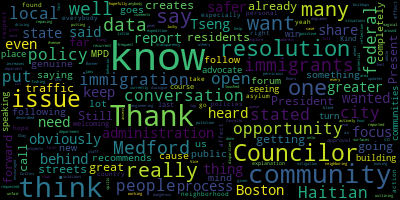
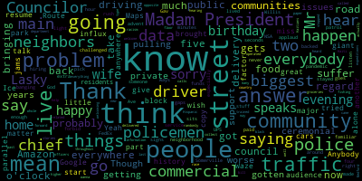
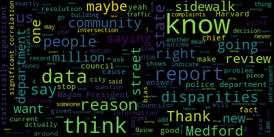

[Morell]: Eighth regular meeting, February 22nd, 2022 of the Medford City Council is called to order. Mr. Clerk, please call the roll.
[Hurtubise]: Vice President Ferris. Present. Councilor Caraviello. Present. Councilor Collins. Present. Councilor Knight.
[Collins]: Present.
[Hurtubise]: Councilor Scarpelli. Present. Councilor Shank. Present. President Morell.
[Morell]: Present. Seven present, zero absent. Meeting is called to order. Please rise to salute the flag. Hearings, 22-056, City of Medford, notice of a public hearing. The Medford City Council will hold a public hearing in the Howard F. Alden Chambers at Medford City Hall, 85 George B. Hassett Drive, Medford, and via Zoom on Tuesday, February 22nd, 2022. A link to be posted no later than Friday, February 18th, 2022, on a petition from Casa Pizza, Milton Melgar, 62 Lambert Street, Medford, Mass, 02155, for a special permit to amend its hours of operation in accordance with Medford zoning ordinance, chapter 94, section 94-145, to operate extended hours at its business at 62 Lambert Street, Medford, Mass, said site being located in a commercial 1C1 zoning district as follows. Extended hours of operation requested, 11 p.m. to 2 a.m., seven days per week. Petition and plan may be seen in the office of the city clerk, room 103, Medford City Hall, Medford, Massachusetts. call 781-393-2501 for any accommodations or aids, TDD 781-393-2516. The city of Medford is an equal opportunity, AA 504 employer for information, contact the city clerk 71-393-2425 by order of the city council, sign Adam L. Hervey, city clerk advertised in the Medford transcript February 3rd and February 10th. is as this is a public hearing, we'll open with those in favor of the petition. Is there anyone here in favor of the petition? Please come up to the podium and provide your name and address for the record, please. Hi, name and address for the record, please. And your name? Thank you. And you're in favor of this petition?
[Unidentified]: Yes.
[Morell]: Thank you. Anyone else in favor of the petition? portion of the hearing is closed. Anyone opposed to the petition? Seeing and hearing none, this portion of the meeting is closed. Chair of the Subcommittee on Licensing, Councilor Scarpelli.
[Scarpelli]: Thank you, Madam President, and I've gone through all of the paperwork. We find everything in order. Um, I know that I've talked to a few, and it's my neighborhood. I've talked to a few of Mr. Mel guys neighbors, and they are very pleased of how he's running the business. I haven't heard him negative. Um, any negative banter in any way from his business location. I think that what he's asking for, I would support and just put a 90 day review on this process as we normally have done with most of these requests that we give Mr. Malgar the opportunity to open from 11 to two. And after the 90 days, we revisit to see if we've had any concerns or issues from the neighbors or police or anything like so. I would move to approve with the 90 day review.
[Morell]: On the motion of Councilor Scarpelli to approve with a 90 day review, seconded by Vice President Bears. Mr. Clerk, please call the roll. Sorry, Councilor Knight has to stand up. Councilor Knight.
[Knight]: I do have a couple of concerns relative to a business being open until 2 a.m. seven days a week in a residential neighborhood. We know this location, we know where it's located, Lambert streets and right there on the corner, but it's a number of homes. What type of business do you get? Is mostly a volume foot traffic? Can the applicant give us a little bit more insight into what's going on at the place? Is it mostly foot traffic, mostly delivery type of stuff? I mean, I'm very reluctant to say yes, they open till two o'clock in the morning on Sunday, right? With foot traffic. I don't want this to be the place where people are leaving the casino or the bar room and they're saying, let's stop at Medford at Casa Pizza on the way home because it's right off of the Fellsway. So that's a concern that I have. And so I was just wondering, is it mostly a business delivery? Is mostly a business walk-in? And maybe we can just provide some insight to that.
[Scarpelli]: Did you understand the question? Just, I mean, I would do a delivery only the late night after 11.
[SPEAKER_21]: There's no one I'd leave for work.
[Scarpelli]: Okay, so the question was, are you planning on mostly having like Grubhub combined take food, or is it gonna be mostly people coming in? What do you envision? People walking in at two in the morning?
[SPEAKER_21]: No, not just walking in, just for delivery.
[Knight]: Okay. So would a delivery only restriction be something that would be suitable from 11 to 2am without work for you, and then maybe on Friday and Saturday, allowing them to stay open till two o'clock in the morning for patrons as well something like that.
[Scarpelli]: I'm sorry, can you say that again? So the question he said, would you be amenable to, if his request is that you do delivery only from Monday, Monday through Friday, Monday through Thursday, and then from 10 to 11 to two, just do delivery. And then on Friday and Saturdays, open till two o'clock. Correct, correct. Would you do that? Yeah, I will do that. Is that correct, Councilor?
[Knight]: That sounds absolutely correct, Mr. Chairman. I'd certainly support the application with those restrictions in the 90-day review. After the 90-day review, if things are going good, then maybe we can move on some of those as well. But I'd hate to go grant a full approval and then have them come back 90 days after operating. Let's maybe ease into this a little bit and take a look at it. And at the 90-day review, if we can lift some of these restrictions or requirements, we might be in a better spot in protecting the neighborhood.
[Scarpelli]: Thank you to review for the Mr. Mel guy, what counsel nights asking if it's okay that we do a 90 day review that you on Friday and Saturday say open till two, but Sunday through Thursday, you do only delivery from 11 to two. Yeah. Okay. And then as that goes, then we can revisit in 90 days. He's saying if we, if that, if it shows that there's a need, is that okay? I'm amenable to that.
[Knight]: I'd often lose his conditions, Mr. President. I'm not a president.
[Scarpelli]: As conditions and so I yield to Council night's motion. I think the petitioner will accept that. So I think it's it could be something we can work on, then revisit again as you need to. Okay.
[Morell]: So on the motion of Councilor Knight to approve the petition with a 90-day review under the conditions of delivery only from 11 p.m. to 2 a.m., Monday through Thursday.
[Hurtubise]: Sunday, Sunday through Thursday.
[Morell]: Sunday through Thursday, and then Friday and Saturday.
[Hurtubise]: Open till two.
[Morell]: Open till two for walk-in customers.
[Hurtubise]: Yes. Any further discussion comments. Mr. Clerk, please call the roll.
[Unidentified]: Yes.
[Hurtubise]: Councilor Scarpelli? Yes. Councilor Tseng? Yes. President Morell?
[Morell]: Yes. Seven affirmative, zero negative. The motion passes. Thank you, Mr. Malgar. Motions, orders, and resolutions. 22-080 offered by Councilor Caraviello. Be it resolved that the Medford City Council reappoint Fred Lasky as the council's appointment to the community garden commission. Mr. Lasky's appointment has expired and his experience and commitment to the commission would be welcomed for another term. Councilor Caraviello.
[Caraviello]: Thank you, miss, Madam President. Before we start, if I could wish my wife a happy birthday this evening. I'm sorry she's home alone with me here. But again, happy birthday to my wife.
[Knight]: Happy birthday, Carol.
[Caraviello]: Madam President, I think this speaks for itself, and I think everybody has a copy of Mr. Lasky's resume, again, which speaks for itself. Mr. Lasky is in the audience this evening. I think if we could hear from him, it would be great to hear him just give a little history of himself.
[Morell]: Fred?
[Caraviello]: Yeah.
[Morell]: Yeah.
[Tseng]: Yeah, before we delve into the professional aspects of this, I just wanted to note that Mr. Lasky has been such an important person to our Medford community, as with his time living here in Medford. I remember very fondly how Mrs. Lasky, who I had as my fourth grade elementary school teacher, brought Mr. Lasky to our class, and he talked to us about the NWRA, talked to us about his job, talked to us about the importance of caring about how we use water resources in our community, even brought us some water bottles. And so I'm very, very fond of those memories. And I think they really exemplify it. They really show, I think, epitomize, they really epitomize how much of a positive influence Mr. Lasky has been for our community. He's really been there for our kids. He's really been there for our residents in his work. with the MWRA and with the different, with the gardening commission, with different commissions has really showed, I think, all of us how important of a person he is to Medford.
[Morell]: Thank you, Councilor Sagan. Mr. Olaski? name and address for the record.
[SPEAKER_21]: Frederick Lasky 55 summit road metric mass obviously. Thank you, Justin. Yeah, who knew right. He's a great kid. You'll be a great city council. Proud of you. Several years ago, the wisdom the city method created a garden commission, and the idea of promoting community garden and the importance of gardening in the community of Medford. And I was fortunate to be one of the appointees, city council's appointees. There were four other appointees who were appointed by the mayor. And frankly, they're a great group of people. They're hardworking, they're there through thick and thin, and really have a vision for this community. And the importance of gardening. And since the inception of this, this commission. We've got the winter garden. We've got down at Tufts Park down behind the Curtis School there. We've been working closely with the Housing Authority on Willis, Valley Park. And frankly, a couple of our efforts didn't bear fruit in trying to locate gardens in some of the parks in the city, because there was other pressures there for the athletic groups and people who didn't particularly want that in their neighborhood. But it's been a great success. And I saw Amanda Bowen here earlier on the TV. She's got her fingers in everything. Everything that's good in the city, Amanda's in and around it. And the group is a great group. And I'd like to serve another term if you start in your wisdom to reappoint me and keep up the effort and keep up the fight. And I also think that I should point that they also not only work to create the new guidance and set up rules on how they should conduct themselves. They've raised a lot of, we've raised a lot of money that's gone and funded. the parks and they take it to the educational side to the importance of food and being able to sustain food and the issues around the food desert and, and, and, you know, things like that, the food pantries around, provide them with good fresh vegetables and the importance of fresh vegetables in people's diet. So it's really a great, great group of people. And like I say, I'm proud and pleased to be part of it. So I don't know if you have any questions, concerns.
[Morell]: Any questions or comments from the council public.
[Knight]: Mr. Lasky, thank you for your service. I remember one of the first votes that I took as a city councilor was in support of your appointment to this position. I think you've done a great job here as well as at the MWRA. And it's without hesitation that I will support Councilor Caraviello's recommendation this evening. Over the years, I've had the opportunity to work with you in various capacities and you continue to put out a great product for the city of Medford and your actions have always spoken louder than your words and your track record is proven. So thank you very much for all you do for the community. I'm happy to stand beside you and support you this evening.
[Morell]: Thank you, Councilor Knight. So on the motion of Councilor Caraviello.
[Scarpelli]: Council President.
[Morell]: Yes.
[Scarpelli]: Thank you again, just to be redundant because you deserve it. I think that Lasky family in general, what you always give back to the community, not only that in your professional life, you've always looked out for Mr. Lasky and it's something that we're grateful for and having, um, you know, you're a better half working with our children, and you'll always see Mrs. Lasky in the garden. I always remember seeing Mrs. Lasky at the McGlynn Garden, and the pride and joy of that area. So I think that having you reappointed would just keep this moving forward in a positive way, and I support Councilor Caraviello's motion as well, so thank you.
[SPEAKER_21]: I actually at one point was a youth soccer coach in his behest. So anyway, it's a small town. It is.
[Morell]: Further comment on the motion of councilor Caraviello to reappoint Fred Lasky to the community garden commission. Seconded by vice president bears. Mr. Clark, please call the roll.
[Hurtubise]: Vice president bears. Yes. Councilor Caraviello. Yes. Councilor Collins. Yes.
[Unidentified]: Yes.
[Morell]: Yes, setting affirmative zero and the negative the motion passes. Congratulations. 22-081 offered by Councilor Scarpelli be it resolved that the Medford City Council express our sincere sincere consultances to the family of William F. Billy Hopkins Jr. on his recent passing. Councilor Scarpelli.
[Scarpelli]: and Mr. Huckings raised Debbie, John, Bobby, and Laura, and just wanted to reach out and give a moment of silence for Mr. Huckings' passing and wish their family deepest and sincere condolences. So thank you.
[Morell]: Thank you, Councilor Scarpelli. Any other councilors? On a motion of Councilor Scarpelli? Please rise for a moment of silence. Clerk, if you could please call the roll.
[Hurtubise]: Vice President Bears. Yes. Councilor Caraviello. Yes. Councilor Croms.
[Knight]: Yes.
[Hurtubise]: Councilor Knight.
[Knight]: Yes.
[Hurtubise]: Councilor Scarpelli?
[Knight]: Yes.
[Hurtubise]: Councilor Tseng?
[Knight]: Yes.
[Hurtubise]: President Morell?
[Morell]: Yes. 7 in the affirmative, 0 in the negative, the motion passes. 22-082 offered by Councilor Tseng and Councilor Collins. Whereas residential streets between Main Street and Mystic Avenue, such as but not limited to Bonner Ave, Hancock Avenue, Billings Avenue, Golden Avenue, and Alexander Avenue are often used as cut through streets to bypass Harbor Street traffic and Whereas residents in South Medford have raised questions and concerns about the speed of traffic, pedestrian safety, the quality of residential streets, and the city's temporary and permanent solutions. And whereas mobile applications like Waze have exacerbated these issues, be it resolved that the Medford City Council investigate the questions, concerns, and issues listed above and ask the acting commissioner of public works and the traffic engineer for an update on strategies to address these issues. Be it further resolved that the Medford City Council asked the Department of Public Works and the Engineering Department to consider repaving dilapidated residential streets used extensively by commuters to bypass Harvard Street traffic, adding do not block intersection signage and do not block the box road pains to the Bonner main intersection and implementing strategies to lessen traffic buildup at the intersection of Main Street and Harvard Street. be it further resolved by the Medford City Council that this discussion be referred to the Subcommittee on Public Works and Utilities for further discussion with the Department of Public Works and Engineering Department heads. Councilor Tseng.
[Tseng]: Thank you so much President Morell. So this resolution is something that I was proud to submit with my fellow South Medford Councilor, Councilor Kit Collins. You know, this is when I knocked on doors in this neighborhood and in my home neighborhood, This was something that came up, basically at every single door. I mean, there, I don't think it's an exaggeration to say that the issue salience was off off the records was off the charts. When you when you walk down these kind of these. cut through streets, as they're called, you realize how fast the cars go down them and how heavy the traffic is during rush hour. And this poses a threat to the safety of the residents in those neighborhoods when it comes to something as simple as walking across the street. And it actually is a problem for accessibility as well. So, on the front on the matters of pedestrian safety when it comes to speed, when it comes to just the mere quality of the streets. I think that this is a super important issue for a neighborhood that's been a little bit overlooked over the last few years. The proposals, I've suggested the city look at are things that neighbors have written to me and emails in recent weeks, asking us to ask, asking us to explore, you know, they might not be the solutions but I think it's worth having our city. Look into some of the proposals that our neighbors have brought up.
[Morell]: Thank you.
[Collins]: Thank you and thank you for outlining you know just how recurrent this issue is in some of the neighborhoods that we and I'm sure many other Councilors also frequent. Obviously our engineering department and our DPW have a full queue of traffic mitigation and repaving projects that they're actively working on. We're lucky to have them on the case. Still the area that we've described is very pernicious one for traffic jams as already touched on. creates buildups at every peak hour, spills over onto these cut through streets like Bonner Avenue and others, degrades the road surfaces, increases air pollution for the residents of these neighboring streets, and creates very dangerous driving situations like blind turns, impatient behavior behind the wheel. So obviously there's no magical solutions, but looking forward to getting some updates from our city staff on what's currently going on to address these issues and hopefully explore what more can be done. Thank you, Councilor Collins. Councilor Favrello.
[Caraviello]: Thank you, Madam President. I think, you know, two Councilors brought up is probably the biggest factor of this is Waze and Google Maps and other things. Anybody that lives off of a main road suffers from this. I suffer from where I live. I parallel Route 16 and Ice Street. And you talk to people in other communities, no matter where you go, this is a, this is a problem everywhere. And the other problem is, it isn't, it's not so much the people driving, but you know, you've got a, now you've got a major influx of commercial traffic on the streets, from the Amazon drivers, the food delivery driver. I mean, there's There's so much more commercial traffic on the streets than there's ever ever been before. And I think that's a that's a giant part of this problem do you know they and these are people don't live in the community have no regard for going up and down streets a park anywhere cars traffic jams and, and so on. The answer to this is, I don't, I mean, I don't know if you could ever have an answer to this. We can't block people from going down public streets. It was tried in another community and some residents challenged it and they made him take all the signs down because these are streets that are paid for with public funds. Do we have enough policemen to patrol these streets? No, we don't. I mean, we just can't have a, and I say, listen, I know this, I've lived in this neighborhood, but I'm familiar with it. at that five o'clock, that four or five o'clock rush hour when Mr. Gav gets back down to Somerville and Main Street gets backed up and then everybody goes down Willis Ave and they're banging up and down the streets. The answer is we don't know. I mean, but I say, you know, I think, you know, the ways and the, you know, all these driving gaps are probably the biggest, biggest problem. Again, you know, God forbid someone sits at a light for, you know, an extra two minutes. You know, if you, if you take the right there, you'll, you'll, you'll pick up 30 seconds and, and you, and you'll go everywhere. So I applaud them for bringing these to the, I mean, to the council. The answer is I don't know if there is there is ever an answer with all the traffic NSA especially the commercial traffic, which we've never ever had before, with the advent of all these you know food delivery service and Amazon and FedEx and UPS and. And they're all hiring private drivers too to go around private stuff. So again, it's just the, I think it's gotten worse during the pandemic because everybody stayed home and now you get the groceries delivered. So I think this has been over the last two years, it's gotten worse than it's ever been. So again, I welcome any help that these neighbors, and it's not just these neighbors, it's neighbors throughout this whole community that live off of a main road.
[Morell]: Thank you, Councilor Caraviello. Vice President Bears.
[Bears]: Thank you, Madam President. Yeah, I just wanted to add, as someone who does move through the area and spend some time in the area, I do think some of these don't block the box proposals would be helpful because you just have people sitting, you know, I think you have Bonner and Maine here, but to be honest, we should probably have one at Maine and Harvard and maybe define turning lanes. I mean, that intersection gets really rough with people, you know, people turning left and then people going around them. And then God forbid, there's someone in the intersection, you know, that can cause accidents as well as Harvard. And I can't think of the other street right now, but it's about halfway between Mystic and Harvard and Maine and Harvard. It's the cross street of crossing Harvard. For some reason I'm blanking. It might be, but yeah, so, you know, I think those interventions would be helpful just to not have the traffic backup also block intersections, which causes backups into the neighborhoods even further. Thank you for putting this forward.
[Morell]: Thank you, Vice President Bears. New address for the record, please.
[D'Antonio]: Anthony D'Antonio, 24 Hicks Avenue, Justin, Councilor Sam, glad you brought this up. What I'd like to tell you, what I'd like you to do is spend some time down there. I know you're in school, so you may conflict with your schedule, but you go down to Willis-Pixave, East Albion Street, go when the kids are getting there to school, okay? Just take a camera with you and watch what happens. The police are there trying to direct the children. for their safety. People don't even stop the stop sign. Police can't go after these people all the time because they're too busy watching their kids. The signage is like spaghetti. It's all over the place. It's not right. They did a remake of the circle down by the school. It's a complete, it is, it's not right. The traffic engineer designed it. Don't know how he came up with that solution, but it's not working. Another problem is by the collect bakeries. You cannot come out from Bow Street or Ellington Street and have a clear view of the cars coming up from the south side of Main Street. And there's a lot of kids across there in the morning. And the whole thing that has to be done is it has to be enforcement. Because right now, the police are too busy doing things. And people say, well, what do they do? Well, they do a lot. But what's more important is to get these things and get these people and condition them not to take these streets, okay? Or to put some signage up there. So it's dangerous. I mean, I can hear them coming up from Willis Avenue. You know, they got these low-riders flying down the street there, you know, and they're popping in the music and everything. And there's kids trying to cross the street. So let's do this before somebody gets killed out there. Thank you.
[Morell]: Thank you, Mr. J. Antonio. I see Miranda Briseño with their hand up on Zoom. Miranda, name and address for the record, please.
[SPEAKER_02]: Miranda Briseño to Taylor Street. Yeah, so I just wanted to echo the concerns. I don't live in South Medford, but I've both walked and driven and biked through it enough to know what these problems look like. And while I, Support signs is an interim approach. The best way to slow cars down, whether or not they're cutting through streets is to simply redesign our streets to be a lot safer. We can be narrowing lanes, putting speed humps, speed tables onto these residential streets to really force drivers to go slower. And similarly relying on enforcement really can backfire and be really unsafe for a lot of communities. So the best kind of enforcement that we as a community can investment is better designed streets. Thank you.
[Morell]: Thank you, Mr. Senio. Hillary Klein, I see your hand up on zoom. Unmute you. Name and address for the record, please.
[SPEAKER_04]: Hello. Ellery Klein, 37 Fells Avenue. I'm a member of Walk Medford, so you're talking to that group tonight. Just wanted to sort of confirm the idea that things are not going well right now out there. There's a crisis nationwide. The last year has seen an enormous rise in fatalities of pedestrians and traffic deaths in general. There's been a 50% rise in pedestrian deaths over the last 10 years nationwide. So there definitely is a crisis in people driving too fast recklessly. And so we do need to deal with that here in Medford. I just want to echo what Miranda just said. We do have a complete streets policy in Medford that Mayor Burke signed on to about five years ago. And I think the most important thing for people to understand is that by redesigning our streets and also using a lot of low cost, high impact interventions like paint. I actually just worked with Todd Blake to get four, actually three pedestrian crossing signs on Salem Street that are sitting in the middle of the street. And immediately the owner of Your Italy asked if he could get one too. So I was pretty pleased to see that there was a good reaction among the business owners there to something like that. But all that does is it's a couple hundred dollar sign that sits in the middle of the road and forces drivers to kind of go around it a little bit. So they can't just speed down Salem as much as they have been in the past. Things like that paint on corners can really have a huge effect for not much money. But in general, our city council and our mayor just need to support and fund our excellent traffic engineers. We now have two in the city and they're ready to go with of ideas and plans, but we do need to make sure that we're funding these things as a city, if we really want to make real change to the way drivers go through Medford. Thank you.
[Morell]: Thank you, Ms. Hyde. Martha Andres, name and address for the record, please.
[Andrus]: Yeah, hi. Thank you, Nicole. I'm Martha Andres. I live at 45 Kilgore Avenue in Medford. I like I'm also Walk Medford and I'm also the Energy and Environment Committee, a member of that committee and it is a very, Medford has a lot of roads, it has a lot of state roads, we have a lot of traffic, and yet we're trying to be a livable community. We have to remember that and do absolutely everything we can. The Complete Streets program has been very successful in the areas where it's been funded, you know, Safe Routes to Schools improvements, for example. We need so much more of it. I mean, this area between Mystic Ave and, you know, in South Medford is just really crying for better Complete Streets design. and we need to work with our engineers. We also need to bear in mind that people need the option of being able to walk places and they need the option to be able to take buses and transit. And we need to think beyond the car. Our lives are way too wrapped around the car and it does affect our walkability and our livability as a city. So thank you for considering this resolution.
[Morell]: Thank you, Ms. Andres, Vice President Bears.
[Bears]: Thank you, Madam President. And, you know, definitely completely agree with many of our commenters. And, you know, I think I've said this a few times in the past that I will occasionally be a broken record, but this is another broken record moment. The backlog of repair. So just bringing up current streets and sidewalks to good condition in their current design is $170 million. The annual budget of the city is $190 million. Right. And I believe we're looking at A million or 2 million in that budget that's dedicated to street and sidewalk repair every year. So that's what 7080 years will maybe get there and we all know that the rate of deterioration of streets and sidewalks is much faster so we're actually never going to get there with current levels of investment. Because of state laws is drastically underfunded. I think we seriously once again need to look at as part of a solution to a variety of problems, something like a debt exclusion to address design issues roads and sidewalks you know if we're talking about $170 million backlog. We're just never going to get there with the revenues we have now, the federal money that's coming in for infrastructure and ARPA still isn't going to get us there. And maybe it'll make a dent, maybe we'll make a 10 or $20 million dent we don't know exactly what the mayor's proposing around the use of that money yet. But, you know, essentially if we stay status quo with the money that we have now we're going to have poorly designed streets with potholes and sidewalks that no one can walk on. And if that's a decision that the community wants to live with and that's a decision that they can live with but I do think it's our obligation as leaders of this community to at least ask that the community and the voters. what kind of community they want to live in. And without new revenue, we are not going to solve this problem. It will never be solved. So until someone, and again, you know, when it comes to funding, this city council under our current form of government, we cannot initiate appropriations. We can only cut, we can only say no or cut. So until the leadership of this community wants to put a proposal before this council, maybe for a bond issue or before the voters for a debt exclusion, Basically the answer I can give you is unless we get a grant from the state, which we did on, you know, for some of the safe routes at the Roberts and the safe routes at the Brooks, we will not be able to solve this problem. So it is certainly a funding problem and status quo on it means that we're going to continue to have streets and sidewalks that are poorly designed and unsafe. Thank you.
[Morell]: Thank you, Vice President Bears. Any further discussion? On the motion of Councilor Tseng and Councilor Collins, seconded by Councilor Caraviello. Mr. Clerk, please call the roll.
[Hurtubise]: Yes. Yes. Yes. Yes.
[Unidentified]: Yes.
[Hurtubise]: Councilor Scarpelli?
[Unidentified]: Yes.
[Hurtubise]: Councilor Tseng? Yes. President Morell?
[Morell]: Yes. Seven in the affirmative, zero in the negative, the motion passes. 22-083 offered by Councilor Tseng. Whereas the 2020 Massachusetts Uniform Citation Data Analysis Report, the report of projects supported by the Massachusetts Executive Office of Public Safety and Security suggests that there is a statistically significant correlation between race slash ethnicity and step on stop outcomes in Medford, or black and Hispanic individuals are more likely to receive criminal citations or be arrested, and Hispanic individuals are less likely to receive written warnings and whereas the report states that there may be a multitude of explanations for these disparities, and how bias may be one among these many explanations whereas the report strongly encourages reflection and conversation about the potential causes of these disparities to build and maintain community trust, which is paramount to our public safety. Be it resolved that the Medford City Council request that the Chief of Police investigate potential causes of stop outcome disparities and report back to the City Council on his findings, and be it further resolved that the Medford City Council ask the Medford Police Department to publish data on all motor vehicle stops, outcomes of searches, triggering offenses, in the duration of stops, the data requests by researchers behind their fort, and post this data on its website. And be it further resolved, the Medford City Council asks the Medford Police Department to consider holding a community forum on traffic stop issues in order to deepen community trust and public safety as recommended by the report. Councilor Tseng.
[Tseng]: Thank you, President Morell. So the context behind this resolution is this 2020 Massachusetts Uniform Citation Data Analysis Report, which is a super long name. So that's why I'll call it the report. This is a project that the state government put out there. They found researchers from, I believe, Salem State and Framingham State. to comb through data from almost every single municipality in Massachusetts to look at, you know, what is the relationship between race and ethnicity and the frequency of traffic stops and the outcome of traffic stops. And what this report found was that in Medford, there's no statistically significant correlation between race and stops. But there is a statistically significant relationship between race and stop outcomes. And this report is very clear that this is not about blame. It's not about labeling people as racist or anything. This race could just, bias could be one of many, many, many reasons for why this is the case. But what it does say is that there is a reason, there must be a reason why Black and Hispanic individuals are subject to different traffic stop outcomes. And that this is not something that we can just say is a coincidence. It's not something that we can put down to chance. It is something that actually has a cause. And so this, this resolution is really about public safety. It's really about building trust in in our law enforcement building trust in our city government to do what's right and to do what's fair for everyone. We there it's it's no secret that that police and racer sensitive issues. They have been sensitive issues, especially in the last two years. And part of how we should move forward as a community and how this report, this nonpartisan report puts it is that we need to build trust in our government again. We need to rebuild that trust. We need to rebuild trust in our law enforcement. And the only way to do that is to be honest about, to have an honest conversation about this data and to have an honest conversation about possible explanations for these disparities. And so again, this is not about placing blame. This is not about labeling people names or saying that something is necessarily bad. This is about addressing this statistically significant data point and in taking the state's advice and how we should move forward and make our community safer.
[Morell]: Thank you.
[Caraviello]: Thank you. On this, this paper here. I don't hear the police department getting called. I mean, we're getting calls about people being stopped of racism. I haven't heard that from the chief or any, any, any of the police, police information.
[Tseng]: It's not about stops. It's about the outcomes in stock. So it's not about the stocks.
[Caraviello]: Not everything that happens in this community is race related. Sorry to say that. And that's what this is saying, that policemen are only pulling over black and Hispanic people.
[Bears]: That's not at all what it's saying. Yeah, it's nothing close to this.
[Caraviello]: It's actually the opposite of what this is saying. It is.
[Morell]: Again- Councilor Caraviello has the floor.
[Caraviello]: I have the floor, thank you. Thank you. The chief here, under this new chief, he's trained these officers very well in regards of how they operated in the past. I don't, you know, again, these may happen in other communities. I'm not saying that they don't happen, but I'm not hearing stories of our policemen just pulling people over randomly. Again, the police, they do have data, they have higher data, people that collect data and all these things. I don't know, I just, I don't know, Councilor. I think we're just going, I think we're going on fishing expeditions when we do these type of things.
[Morell]: Thank you, Councilor Caraviello. Councilor Collins.
[Collins]: Thank you. Was Vice President Bears first? Okay, great. Thank you. Well, thank you, Councilor Svang for putting this forward. Thank you for the comments so far. And I just feel the need to say off the top, you know, I think, you know, given the fact that this is data that's been reported by the state, you know, I think it's a little unfair to call it a fishing expedition. when this is data that, you know, is now out in the open, you know, it's not something that Medford requested, it's just something that we have access to. And, you know, to me, since this is out there, it's a state report, greater transparency and dialogue around the issue can only be positive for the whole community. Just having the data and not following up on it doesn't help anybody. So I'm encouraged that the report recommends reflection and conversation about the potential causes. of these disparities and gives us a lot of opportunities. It's the opportunity for the public to follow up on a concerning issue, you know, demonstrated in the data and get more insight. It's the opportunity for our city to investigate and better learn what is the cause of the patterns. As Councilor Tseng said, you know, it's not about blame. It's about asking what's behind this data, going with an open mind and saying what's behind it. And it's an opportunity for the MPD to share its perspective, share what goes into its work. I completely agree with you. I know there's been a lot of new hires. I've heard from the chief firsthand, you know, how dedicated he is to really comprehensive training. And we know that that's genuine. And I think it would be great to have a forum to share that with more of the community. So, you know, to me, building and improving ties between MPD and the community. That's an existing stated goal that I've heard from many people within the administration. And I think that, you know, a conversation like the report recommends is is walking the talk, you know, following up on the issue holding a forum. I really do think it could be a win win because at the end of the day building trust keeps the community safer and it also keeps our public safety professionals safer on the job as well. Thank you.
[Morell]: Thank you.
[Bears]: Thank you, Madam President. You know what this resolution sites is a state report showing that these data are true, that the statistically significant difference and disparities in stop outcomes are happening. What this resolution asks us to do is to figure out why. And I would guess that this chief, given his decisions, given his role to reform the Medford Police Department, given the statements and stated goals of our police department, that if this resolution were to go before the chief, he would be concerned. he would want to know the answer to why these facts are these facts. And I think that did some, you know, a good role of this council to present information to our department heads when that information comes before us. And, you know, if they haven't seen it before, they can report back to us and say, you know, that was concerning information. This is the review that we did. These are the reasons we found. And maybe that reason We don't know those reasons. We can't say what the reason is until there's an investigation that has happened. So, you know, it's not a fishing expedition when there are facts on the table that indicate that there's a question as to why there's a statistically significant correlation between race and ethnicity and stop outcomes in Medford. That doesn't mean we know why there's a statistically significant correlation. And if we wanna, as Councilor Marks would say, bury our heads in the sand, and not find out the answers to our questions, we're more than welcome to do that. I think the chief and the city and this council and the people of Medford would like to know why the data are the way they are. And I look forward to the explanation heretofore.
[Scarpelli]: Thank you.
[Morell]: Thank you, Vice President Bears. Councilor Scarpelli.
[Scarpelli]: Thank you, Madam President. Thank you for all of you. I think that's important. I can completely understand why Councilor Tseng would like to see this. I know that, I think that in totality, what this resolution says is that, let's ask the chief to gather data on Medford so we can educate and look into this. Because I've also, after reading this, I've contacted a few other colleagues in neighboring communities that had similar concerns and what was the outcome of those concerns were totally against what everybody was saying that it was really race related in the sense that how those numbers were attributed, how they were counted, how it was looked at that Medford looks at this as racial disparity. But I think the numbers will show With what we're asking for that the chief, sit down and look into this process and look at the true data for Medford, not the state because the state's going to show a drastic agreeance what what we're saying because it's, this is definitely an issue in the state, but when you're talking about more method I think that I welcome. the process that our chief looks into the data a little bit with the magnifying glass to give us the true numbers. Because I also understand that what Councilor Caraviello was saying in the sense that I was getting the same phone call saying, why is Councilor Tseng saying that, you know, our police are racist or they're being stopped and that the presumption of, you know, how you interpret the resolution is how people are gonna read it. Be a further result of the Method Police Department consider holding a community forum on traffic stop issues in order to deepen community trust and public safety as recommended by the report. So I think that you're on the right track, but I think before we leap to anything negative connotations, I think that we asked the chief to come in and do a data driven report that states what's going on in Medford, because I don't disagree. The numbers are gonna show statewide where you're getting, what these traffic stops. There is a concern, but I also will think that we'll have a better understanding when the police department, the traffic department does a deeper study in the data in Medford. So I just, like I said, no one's questioning the, I think that, unfortunately, there's racism everywhere, and there are good and there are bad everywhere. And this is the problem. And I wanna make sure that we look at this in totality, that I think we really ask the chief to come in to find these numbers before we can all jump and leap to conclusions that, yes, our police force is racist, which isn't what you're saying. And I know that. So, but at the same time, it's also give us a true indication of what, what our method stops have been, not just for this year, because you could look at one year and get an understanding, but I think we have to look at method stops over three to five year period. I think that'll help. And listen, if that unearths something that's alarming to this council, I think we move forward in a more aggressive manner. But until that time, I think, you know, let's, let's ask the chief to do his due diligence. I would recommend that. I know it's part of the motion, but I just reiterate that motion that we asked the chief to give us more data on traffic stops, not just for this year, maybe going back two or three years. Because I know that what was said in different communities, the numbers were a little skewed because last year during the pandemic year, you had comparison to 800 stops in one community that, previous years that 3200 stops. So it'd be interesting to see that. So thank you.
[Morell]: Thank you.
[Bears]: Thank you, Madam President, and I appreciate the comments of my fellow Councilors. I just want to just for clarity sake, this this report uses data that our police department sends to the state so this report is is Medford specific. Now it's saying the data shows there's a disparity, but it doesn't indicate what the reason it's right and I think that's, you know, no one here is saying we know why there's a disparity. And all we know is that in Medford specifically, there's the data, there's a statistically significant correlation. And I think all we're asking is to say, since we have that data that shows in Medford and fairness to you on the pandemic year and data collection, we all know how much of a mess the census was and everything else, right? So maybe the data is skewed for 2020, but I do believe this is a relatively new report from the state. And all we're saying is, All this resolution is saying is, if the data shows that there's a correlation between those two things, let's find out why no one is no one is intending to say that we know why or that we're putting a motivation or rationale or a reason behind that. But, you know, as I said before, I think all of us in this room would benefit from the answer as to why and if the answer as to why is data collection was skewed or, you know, this other reason or that's important for us to know too because it actually bolsters the case right around community trust and around the fact that things are better. And so that's I think where we're where this is trying to go and why I support it.
[Morell]: Thank you.
[Scarpelli]: And I, I shared the sentiments of Council beers because like I said I reached out to colleagues in different communities are going through a similar resolution and concerns and issues and, and what, what was brought back to me were the concerns the state numbers and how it was represented. So I think that's why having the chief come in and giving us true data what's happening in Medford, with what we're looking at, which is what you're asking the resolution. I think it's important to get that data and numbers, the data doesn't lie. That's one thing about working in a community like Somerville and having summer stats tell you what you're doing right and wrong every day. The data drives a lot of what is the true definition of what's happening. So like I said, all I'm saying is having the chief, giving him the information, asking him to compile that information for what we want, we're looking for in Medford, not for what's been questionable in other communities, but the numbers that came from the state that are a little skewed. So we're both saying the same thing.
[Bears]: Just if I may, just to quickly further add yeah this was pursuant to the acts of 2019 so it is a new state report. I think they're taking data that we're generating here, and even what you're asking for is, if we're generating that data and sending the state, why not put it on the city website to right we already created it we already have it so, you know, It's a new thing from the state. And I, and I also know that this, this police department is doing a lot right now to adapt to changing state law. And that was a big focus of a recent meeting I had with the chief. So I'm, I'm hopeful that this is just another piece of this can be another piece of that process.
[Morell]: I know we have a number of residents who'd like to speak. Name and address for the record, please.
[Deyeso]: I think it's counter saying I'm sorry I'm not familiar with your name yet. I would have to pick up a little bit on Council car violas comment here and a couple of things that I was reading through. It is unusual that the part of the report that was taken out regarding this data analysis report has the word bias in it. No other causes or reasonable explanations are mentioned in this. I really tend to think, because we're, and you can think about this for a second, some people are next to me, well, I'm kind of foggy some days anyway, next to me at a red light for three or four minutes, They could pass me and someone could say to me, did you have a good look at the person beside you? He just went speeding down the street. I would never know. I'm sure half of you will answer the same way that I do. I find myself believing in some of these analysis reports on traffic, I believe about 40%, because in that light of being human, I hardly, hardly think that police officers, especially the ones that I've known for many years in Madrid, can spot somebody speeding or going through a red light the two blocks away, they really know what that driver looks like their face in the color of their skin, or the mask on and everything sometimes. So I have very little faith in a lot in a lot of this. Secondly, I think what they should be doing before. before going into a report like this regarding bias, is have the police chief present a report of what is the most common cause of traffic stop, number one, because that's okay. And also any type of ticket violations that they have coming during the last few years. Because I'm more concerned with the safety of the community right now. I think that should be attacked first, and then going into maybe other data that has been presented. Okay. And then, even with that data I think this becomes more, some of the cars, if there are some people, not, not even the Haitians or anyone else mentioned here, people who are driving maybe even without licenses. So this is a big can of worms. So I think this type of report needs to be looked at after the we presented what the most stops in the reasons for those stops, because I hardly think police officers can see anyone, especially at night, Friday night and Saturday night I'm also interested to know the times of day when most drops are done. You, this wouldn't involve state police, although they are here I see them stopping a lot, this would be method. So I would really go I think you went through the back door. I think maybe the other issues are much more important to community safety to spend some of your time on right now, and then go through this problem and see if this type of safety connection after that. Thank you.
[Bears]: Thank you as a man and present point of information. I just wanted to add, and I think Councilor Tseng presented this when introduced it. I think one of the good, good news pieces here is the report said that there is no statistically significant correlation between stops themselves and race, which goes exactly to your point. It's not that people are seeing certain people and pulling them over for a reason of race. It specifically says that that's not happening in Medford. It's the outcome after the fact that there's data that shows there may be, that there's something to ask a question about. So I think, you know, there's actually good news in the report, which is it proves what people have been saying is that people aren't being pulled over for any reasons of race or bias. And I think, you know, I just, yeah, I'll stop there.
[Morell]: Thank you, Vice President Bears. We have a number of residents on Zoom who would like to speak. Bill Giglio, name and address for the record, please.
[Giglio]: Hi, Bill Giglio. So first of all, I'd like to say congratulations, Nicole, for the birth of your baby. Congratulations. So I like to, on some of these columns that I'm looking at right now, you have a warning, civil, criminal, and arrest. Under the civil, it seems to be pretty much equal, I would say. Civil, I would almost say, is like getting pulled over and a cop saying, you know, getting pulled over, pulling a red light, maybe him saying go or just getting a simple traffic stop ticket for blowing a red light. Now, under the criminal, where it does seem to shift a little bit. Now, if there's something criminal going on, let's just say like there's no, they don't have a license, they don't have insurance, they don't have this or that. wouldn't you want our police officers who we trust to do their job to, um, you know, to hand out a ticket, uh, you know, it may, it may bring up that percentage. Yeah. But maybe they are, maybe they don't have their license. Maybe they were texting and driving. Maybe they don't have, um, maybe they don't have, you know, insurance or whatever the case may be. What, what would make it a criminal offense, not a civil offense. And as far as the arrest side goes, I'm, I'm always happy if, someone is arrested that should be arrested. Now, I personally, I don't think they're just arresting someone just because they're Hispanic. I see that's the highest number. Whites, Asian-Americans and blacks are obviously low. You know, a criminal, a criminal application could be even, you know, just like an unlicensed. But if let's just say somebody is breaking the law, like I'm talking breaking the law, which is an arrestable offense. I would almost think we should be happy that they are being arrested and they're being taken away off the road, whether it be for drunk driving, whether it be for whatever, driving intoxicated, whether it's on marijuana or something, or even texting and driving, which they almost consider as drunk driving now, because it's causing a distraction. So I'm just curious. Now, if you do get a report from the chief, Is he allowed to even say what the arrests were? Do we just have to go by, oh my goodness, look at this, Hispanics, 20% being arrested. Will we be able to see why anyone was arrested? Because other than that, I see, like I said, on the civil side, everything seems to be about the same. Criminal is, like I said, a criminal could be a multitude of things, which I would say warrants a criminal. And an arrest is an arrest, and what the arrest is for, would that type of data be available? And is that what you're going for? You're going for, let's just say, let's put out there why they were being arrested, why someone was arrested.
[Morell]: I think it would be at the behest of the chief, what he puts together, is my understanding.
[Tseng]: Um, I mean, one of the one of the points in this resolution is the word are the words triggering offenses. I mean, the report tells us that we really in order to dig into these numbers and to explain the statistical relationships, we have to consider triggering offenses is one of the possible explanations right so it totally in this report is really clear it There are many, many, many outcomes in this world where this is not actually about bias. And that is exactly why we need to release more data. That's exactly why we need to publish more data. and make it transparent and open. And when it comes to the word bias, this is how the report itself was written. I've actually modified the language of the report to be more, I think, representative of how I think of the good character of the people working for a city and to make it less hostile and to make it more reasonable. But I I'll leave it there. A lot of the skepticism, I think, of this resolution is actually just resolved within the resolution itself. And I think it's important, I think it's important to keep in mind that the report is actually good news if we're just looking at people being stopped because there is no statistical correlation between, there's no statistically significant relationship between the race of people being stopped in Medford and the traffic stops themselves. It's more about the outcome, right? you know, it's totally possible that triggering offenses could be the reason why, but that's exactly why we need to ask the police chief to dig into the data, as Councilor Bears, as Councilor Sparkoli said, in order to give us the transparency and give us that confidence in our own city's functioning.
[Morell]: Thank you, Councilor Tseng. Thank you, Mr. Guillaume. Mr. D'Antonio, we have a few people on Zoom, so I just don't want you to stand. I'll get to you after we get to that, but I just don't want you to stand there forever. Ellery Klein, name and address for the record, please.
[SPEAKER_04]: Ellery Klein, 37 Fells Avenue. Again, I'm talking on behalf of Wacom-Edford. I just would love to make the point that so often in these conversations, something that's lost is that recently it's becoming more evident that traffic stops and enforcement often have very little effect on road safety and people's behavior on the roads. In July 2021, the Journal of Trauma and Acute Care Surgery, journal, medical journal, analyzed 161 million traffic stops across, I think it was like 30 something states, and found absolutely no association with reduced road fatalities. They did caution that this was like highway stops. but there's other studies that are kind of finding the same thing. So when we're having this conversation, it's worth thinking about again, once again, relying on traffic enforcement to make drivers behave better on the road is often a failing mission. And if we think more comprehensively and work and fund on road design and traffic calming through actual, the way we are built environment operates, we're gonna find a lot more success in the long run. Um, so I just wanted to make sure that that that thought is out there as we're looking at this greater question of whether or not we should be depending on the police to try to make our roads safer to begin with. The studies are showing that it's not really as effective as is popular perceived in people's minds. Thank you.
[Morell]: Thank you. We're never saying you name and address for the record, please.
[SPEAKER_02]: Thank you very much. Thank you. I'll just echo what Ellery stated and similar to what Councilor Tseng, Collins, and Bears have stated, the state has already existed, has been provided to us by the state. And so utilizing this data would allow us to understand why that significant difference exists in traffic stops for our Black and Latino neighbors. And to bring this back to the issue discussed on South Medford and traffic concerns, the primary way the general public interacts with law enforcement is through traffic stops. This data from the state is already showing there are disproportionate stops for our Black and Latino neighbors. Data in communities across the country has shown that our Black and Latino neighbors are at disproportionate risk of dying through their interactions with law enforcement. In addition, if you overlay old redlining maps that show high disinvestment and neglect in primarily Black and immigrant neighborhoods with where current traffic fatalities and high traffic concern areas are, these are the same neighborhoods. Similarly, more data from the Massachusetts Department of Public Health has shown that as pedestrians, black residents of Massachusetts are more than four times likely than white residents to visit the emergency department as a result of being hit by a vehicle. In addition, nationwide data has shown the disproportionate risk that black residents to be a traffic fatality than white residents. So at the end of the day, if we're looking to keep our community safe, both from the negative consequences of high volume car traffic, we can also be addressing the true safety concerns that Black, Brown, and other marginalized communities have when interacting with law enforcement by investing more than we are now into safer street design. Thank you.
[Morell]: Thank you, Ms. Morseno. A-Town Viner, name and address for the record, please.
[SPEAKER_13]: Hi, my name's Eitan Blynard. I live at 374 Winthrop Street. I just want to voice my support for this proposal. I think it's a really good one. I think it's the sign of a really healthy society and really healthy police department that when they get news that something seems off, that there's a report that's done by the state that says that things don't look quite right, that they go and investigate that. And they try to figure out what's going on and get to the root cause of that. And I welcome this resolution, and I hope that it gets adopted, and I hope that we go in and look into this and figure out why these data show what they do.
[Morell]: Thank you, Mr. Gleiner. Mr. D'Antonio? Name and address for the record, please.
[D'Antonio]: Anthony D'Antonio, 24 Hicks Avenue. Listen, um, one of the things I think people are not understanding is in the last 10 years, the increase of traffic that comes through the city of Medford, see Medford is a cut through city. They come from everywhere. You don't have the same problem in Winchester. Okay. There's a lot of people that are working in the marketplace. That traffic is on the streets at all hours, three o'clock in the morning. It starts. They're going to the markets, they're going everywhere for work, dirt shift, graveyard shifts, whatever. Okay, and I think it's unfair to draw a conclusion that because people are getting stopped, it has to do with their color or their appearance or whatever, because there's a lot of bad guys that get stopped. So what I would like maybe before you people really get into this, I mean, that young lady that was on before with all the statistics, statistics can be skewed. Okay, MMS is in economics and we know how to do that. So in all these facts and figures, but I'm gonna ask maybe anybody in good faith, ask the chief, if you can go on the ride along and the graveyard shift with the police officer, then come back here and tell me what's going on in the streets. Thank you.
[Morell]: Thank you, Mr. Dean Antonio. Vice President Bears.
[Bears]: Thank you. And that's exactly what this is. And just to read from the report, just to make Councilor Tseng's point, It says the significant data indicates observed pattern in the table is real and not due to chance alone. And then the actual report says this report serves as a starting point for further discussion on racial disparities in traffic enforcement in Massachusetts as previously stated statistical analyses of aggregate department level data can only identify disparities in law enforcement citizen interactions. There are a number of reasons why disparities may occur in law enforcement citizen interactions and bias. both individual bias and institutional bias is only one of the many causes of disparities. The overall goal of this study is to learn more about potential patterns of racial disparities and traffic stops for the purposes of providing an opportunity for reflection and understanding of the causes of these disparities and building or maintaining community trust, ultimately making us all safer. That's the language of this. I agree with Councilor Tseng that he actually made, you know, was not as intentionally direct as the report was to make sure that there weren't misinterpretations, but yes, there still were misinterpretations. So, you know, we're literally doing what I think what everyone wants us to do here, which is to ask the chief for why, to help us move from seeing disparities to understanding causes.
[Morell]: Thank you. Thank you. Thank you. Thank you. Thank you. Thank you.
[Scarpelli]: Thank you. Thank you. Thank you. Thank you. Thank you. Thank you. Thank you. Thank you. Thank you. Thank you. Thank you. Thank you. does do a data dive with these concerns, I think we'll be pleasantly surprised with what our officers are doing. And so, you know, and I understand that these are the questions that were also put forth with different communities that numbers might've been skewed in the state level. So that's why it's important that we get the numbers from the chief. That's why I'll support this because again, the chief will look at methods numbers and get back to us and educate us. Now, if we find something that with method numbers that we have to be, we have to now be cognizant and look forward to directing the chief where we need some support or assistance that we change something that might be hurting our community, then we need to fix it. But I think that welcoming the data is gonna be what we're looking for. I mean, I think we're all looking at the same thing. We all wanna see the data and it's, And it's not for the gotcha game, it's just to get the numbers and let's go from there. And I think the chief will welcome it. If we know the chief, he loves these type of issues where he'll answer these questions. He's never, from what I recall, the chief has never shied away of questions like this. So I pose that in support, so thank you.
[Morell]: Thank you, Councilor Falco.
[Deyeso]: Ms. Diaz, I need an address for the record, please. Thank you, Chair and GSO again. Briefly, Mass Ave. and Circuit Road. I think a couple of us who were disparaging with some remarks looked into this in a wider scope, too, because we were a little older. Well, I'm probably four times your age. You can laugh under that mask at that if you want right now, because I can't see you. There were other things added into the formula, not only time of day, et cetera. that their human element, you know, is not even admissible in some of this. And don't forget, we have technology now. Lots of these people are stopped because a policeman is called. because somebody just went through a device, is that correct? Or a speed trap or something, and then they're called and then they go out. So they don't even have a clue of who they're chasing. So these are really touchy. I think social discussions are always good, especially if you're taking a police chief or something like that. It'd be interesting to see some of the statistics of what the reasons are for the stops. And then you can go into the other reasons afterwards. But I'm just trying to let you know, because you're so much younger too, that you have to look at the whole whole picture before trusting one of these are some other reports. Thanks for your time guys. Thank you.
[Tseng]: So, I think this, this resolution does ask us to take a very holistic and very open minded view on this and, and, you know, again, that's why, that's why we asked about more transparent data that's why we were asking about triggering offenses, why we're asking that duration of stops. et cetera, because, you know, I think it's important to go into this process with a holistic lens. I think most, if not all of us are asking for the same thing, which is that, you know, the police chief just look into this and I trust the police chief. I think the police chief would also be happy to do this. You know, I'll leave this with a metaphor. you know, when you walk into the doctor's office and the doctor sees something, asks you to get it checked out, you get it checked out because you trust the doctor, right? The science is clear and you just, you know, it could be something, it could be nothing, but you trust the doctor because it could be something. And, you know, this very well could be nothing, but I think this is when we go see that specialist and we go get this checked out.
[Morell]: Thank you, Councilor Tseng. Any further discussion? Councilor Collins. Motion for approval. On the motion of Councilor Tseng, seconded by Paul. On the motion of Councilor Collins, seconded by Vice President Bears. Mr. Clerk, please call the roll.
[Hurtubise]: Vice President Bears. Yes. Councilor Caraviello. Yes. Councilor Collins.
[Unidentified]: Yes.
[Hurtubise]: Councilor Knight.
[Morell]: I've been seeing him pop in and out.
[Hurtubise]: He might be having connection issues. I'm going to go back to him just in case, but I'm going to skip this Councilor Scarpello.
[Morell]: Yes.
[Hurtubise]: Councilor Tseng? Yes. President Morell?
[Morell]: Yes.
[Hurtubise]: And let me check Councilor Knight one more time. Okay. So did he indicate which way he's going to vote?
[Morell]: Yeah, I've been seeing popping it out. So six in the affirmative, one absent. The motion passes. 22-084 offered by Councilor Tseng.
[Tseng]: I can offer a summary.
[Morell]: That would be great. Offered by Councilor Tseng and Councilor Collins. Councilor Tseng.
[Tseng]: So this is a resolution that Haitian American community leaders actually reached out to me about putting on the agenda. Let me walk through it first and then talk a little bit more about that. Essentially, Boston, Metro Boston is home to the third largest Haitian diaspora in our country. You know, the Haitian American community has been so vital to Medford in terms of its contributions to our workforce, to the economy and to the culture, general culture of our city. Um, the Census Bureau I just looked this up on right before I submitted this resolution estimated in 29 late in around 2019 that I'm 7.9% of Medford's population was of Haitian descent. And so, the, the immigration policy started during the Trump administration and continued under the Biden administration affects Medford disproportionately. When we, when we look at what these policies are the policies that deportation. This section of the report actually goes into language from both political and civil rights leaders, civil liberties leaders as well. They cite our international, US, our national law and international law in saying that these Title 42 deportations are actually unconstitutional and illegal. And so this is a resolution of support, which I think is especially important during Black History Month. Support for our Haitian migrants who live in Medford. Support to make sure that they're not deported to a place where they barely know, to make sure that they're not deported to a place of political, social, and economic strife, and a statement of support saying that we are a place of refuge and that Medford is a safe place for each and every single one of our community members. I'm very well aware that this resolution may well not have, you know, a national impact, but I think it's, I think that it's vital that we show our support for Asian neighbors. And, and so talking a little bit more about how this resolution came to be, I talked to Councilor, Ruth see illusion in Boston. who is who's working on the coalition to build a coalition of communities to express their support for the Haitian community and to ask the Biden administration to consider reversing their this illegal immigration policy. Um, you know, I think it's important. I think it's vital for us to show that we are a place that's willing to accept and celebrate our diversity and to and again, to create public trust in our institutions with a population that's so important to our city's fabric. And if you will indulge me, I just wanted to send a short message to our Haitian American community here in Medford. I don't speak Haitian Creole, but I speak a little bit of French and I will translate it for the record. So what I said was, I wish, I want to make it known that to the whole world and in particular, our Haitian community here in Medford, that it's important for us that Medford is a city where we all feel safe, and that Medford is a city that's welcoming to all.
[Morell]: Thank you, Councilor Tseng. Any further discussion? Councilor Collins just had her hand up first. Thank you, Madam President.
[Collins]: Well, I'm very impressed by Councilor Tseng's French speaking, so hard to follow that. But I just want to amplify what Councilor Tseng already said and want to thank him for taking initiative on this resolution, as well as for liaising with the other Greater Boston elected officials that are connected to the Haitian community and this coalition, who've been making similar appeals to our federal administration. I would be really proud for us to use our voice as a council. to advocate for a more just and fair and legally compliant immigration system, instead of seeing excuses be used to turn away people who came here in a time of need. And as stated in the resolution, Medford has very long served as a place of refuge for immigrants, immigrants from many, many different places. And federal immigration policy impacts the ability of communities, welcoming communities like ours, to open our arms to new community And of course, it is very relevant that so many Medford residents are a part of the Haitian diaspora. Kind of anecdotally, one of the most memorable conversations that I had when I was out talking to voters last year was with a Haitian man in my neighborhood in South Medford who, when I asked him what was on his mind with the city of Medford, said, I have relatives who want to come and join me here. And because of our immigration policy, they can. And I could see that it was a really heartbreaking issue. um and it was it's it stuck with me more than you know most other conversations So obviously it goes without saying that cities cannot directly affect federal immigration policy, but especially as representatives of the city with such a robust Haitian population, I think that the very least we can do is speak up and to hope that with other local leaders across greater Boston, Metro Boston speaking up as well, that these calls will accumulate and be heard. And, you know, just to recognize that this policy is still affecting people in our community, even when it's left the front pages of major national newspapers. Thank you.
[Morell]: Thank you, Councilor Collins. Councilor Scarapelli.
[Scarpelli]: I thank Council, it's thanks for bringing this forward, but again, I'm going to stay with my vote. I appreciate, I support my Haitian community. I've done a lot for my Haitian community, but at the same time, I'll be voting no on this resolution for the fact that I'd like to see this council work closer with our Haitian community in Medford. And as I talked to a few of our Haitian leaders, it's ceremonial, but I'm done doing ceremonial. votes, and I appreciate that, and I hope you can respect that. So thank you.
[Morell]: Thank you, Councilor Scarpelli. Ms. Diaso? Just name and address for the record, please.
[Deyeso]: Sharon DSL from having circuit bro. I have a good time. Council saying for sometimes conversing with some of my Haitian students on front say and they look oh my goodness now, you know when I even told one day that I was going to in French call his mama. Yeah, you probably probably agree. So, but not not a lot. It's wonderful I get to a chance to chat about food, naturally, and different customs and I love the garb that people wear. I think it's wonderful. I'm just a little confused about some of the language that's in here. It says, first of all, I must admit it says for many years that method has been looked upon as the city of refuge. I mean that that indicates that somebody flew to the city. Not all of them are coming here because they were harmed many of them are educated I teach with them at the college. So I think it should have been like a little corrected in that respect. And refuge also means from an escape also. We're not a sanctuary city. I don't even know what that whole thing means anyway, but we're not legally or lawfully a sanctuary city. So that needs to be sort of dismissed out of the formula. Also, it says that you're going to seek help out of the law that still exists that would demand that all Haitian immigrants and migrants be deported. All people who are legally here are gonna be deported. I don't quite understand that. I don't think that, is that misinformation? I'm sure it's not intentional. It's not, you know, you can see our confusion a little bit on that. And more importantly, I think what we should be doing is maybe writing and asking that we're a city concerned with the problems in those countries, rather than pay and pay and pay and still end up with the same problems that we should be supporting, for instance, like orphanages in those countries where people can safely stay in their own land and funnel our money that way, just as an example. Also, near the end of the Trump administration, he did actually admit, not admit, excuse me, he did allow over 3 million children were actually admitted into that DREAM Act. So there are many, many people who were saved in that, but they had to go through the process and do the paperwork, et cetera. So I think it just needs to be a little bit clearer and sorry about that. Okay, thank you.
[Morell]: Thank you, Ms. Diaso. Councilor Caraviello.
[Caraviello]: Thank you, Madam President. I wanna thank the council for bringing this forward. Though I support the bill as it is, you know, Medford has been a welcoming community to the Haitians going back 10, 12 years when there was a problem in Haiti and many of them came here. to live as they, when their country was decimated. But again, as Councilor Scarpelli has mentioned, you know, these are ceremonial things and I'm not, we have, we need to concentrate more on medical issues than ceremonial issues, so I will not be supporting this, though we do support the intent of it.
[Morell]: Councilor Collins, and then there's a few people on Zoom who would like to speak as well.
[Collins]: Thank you, Madam President, and thank you to everybody who's commented so far and yeah I just really wanted to you know again just focus back on the, the language of the resolution and just I think what I found, of course it's a somewhat complicated issue what I think you know the important thing to focus on is that the. Yeah, kind of the ask here is to say, you know, let, we should be letting all immigrants, especially those applying for asylum to go through that process. If that process is not being allowed, that's a problem all immigrants should have the right to go through the asylum seeking process so it's not, you know, any sort of. blanket this one action should occur for all immigrants this one shouldn't it's just the option should be open that's what it means to be an equitable and welcoming country and to, you know, do right by what we say we say we're trying to do as a country and as society and just you know also just to focus in on the text of the resolution I don't think this is you know an attempt to re litigate any of the actions of past administrations or even present ones, but just to say, you know, because of the trickle-down effects of all federal policies on our local ones, this is what we're advocating for. And on a more personal note, you know, I completely appreciate and respect, you know, councillors who want to keep the purview of what we put on the agendas here to just super local issues. I really do understand that and I respect it. As I've stated before, you know, my personal posture is that I do want to take the opportunity to advocate for policies that affect our community, even if they are things that we do not have authority over. So I take that as an explanation for why I put on and co-sponsor resolutions like these. And I do hope that in some indirect way, declarations like these do have a cumulative effect in getting the ear of people higher up in government to say, this is what I need. This is what we're seeing on the ground in our community. And this is how to make our local levels safer for everybody. Thank you.
[Morell]: Thank you, Councilor Collins. Matthew Page-Lieberman, name and address for the record, please.
[Matthew Page-Lieberman]: Yes, hi. Yes, I'm Matthew Page-Lieberman. I live in 15 Canal Street, though I'm visiting family in Florida at the moment. I just want to say that I'm extremely thankful, and I think here in the community, we're extremely fortunate to have Councilors Tseng and Collins advocating and bringing forth this bill. I used to live with a Haitian family in Medford, And, you know, Haitian communities are one of the communities here that I think really kind of created Medford as their home. And I don't see a lot of representation a lot of time. There's some Haitians in local government or commissions, but it's extremely fortunate now to see like that members of the Haitian community have reached out to Councilor Tseng and then he's advocated for them and that they're actually getting a voice and having people actually fight for them within our community. I very, very much support this. And I think one of the things that was in the resolution Something that I recall is if anybody recalls the video of, you know, police or people, you know, people on horses whipping human beings as if they were animals. I think that's something perhaps we may forget when we're talking about these kind of convenient arguments about it's outside of our purview. That's this whole thing about whether or not it's within our purview, I think is a lot of times it's kind of conveniently applied sometimes we say that something's in our purview. Other times we just kind of make that up because we don't want to take on an issue that would really request that we stand up and take kind of a principle and expand. expand, you know, what the job of an elected can actually be, you know, to really make calls. It is a direct thing. It does have a direct impact on whether Haitian people are allowed to come into our community and make it their home too. And finally, I don't know, I think Councilor Tseng and Collins didn't really articulate this, but I think what's within this is there is kind of an articulation for something about freedom. If we kind of take a look at our country, Although we don't officially have a religion, many times it's conceived of as, you know, the American religion or the American ideology is one of freedom. We hear a lot about talk about freedom, especially during this pandemic and when people are opposed to kind of cooperating and taking actions that would, you know, be conscious for all of us. One thing that's really off the radar a lot when we talk about freedom is freedom of movement. you know, freedom of where allowing human beings to go wherever they want to go, wherever they want to live and whatever kind of lives they want to have. So there's a lot of us that we want to talk about where people can't live here, they can't do that, they can't drive there, they can't build here. We don't want this many people or people who look like this or that to live in our neighborhood. And I think that one critical thing about freedom is yes, freedom of movement. And so I completely support this. I'm completely thankful. I hope that as many people vote for this as possible to allow people the freedom of movement and for us to stop prohibiting and stop supporting any kind of system or regime that would put us on a pedestal and exclude other people from freedom of movement and being able to live wherever they want to live. Thank you.
[Morell]: Thank you, Mr. Page, Lieberman, Mr. Giglio, and then we'll go to Mr. Navarre in the chambers. May I address further record, please, Bill Giglio?
[Giglio]: Hello, can you hear me? I'm sorry, did you unmute me? I apologize. All right, so I have just a couple of quick questions for Councilor Tseng, Councilor Calling. So if you're saying, you know, in Medford, you want them to be, you know, you don't want deportation, how many have actually been deported that live here in Medford and not being deported for a criminal reason? Do we have that number?
[Morell]: You can ask questions that the Councilors don't have to reply. It's not a time for cross talk. You're allowed to state an opinion, state your comments, but the Councilors don't have to respond to questions.
[Giglio]: They don't have to, but can they?
[Morell]: For Robert's rules, there's no direct cross talk.
[Giglio]: I understand.
[Bears]: At the chair.
[Giglio]: Okay, that's fine. And then one of the paragraphs I'm reading, it says, whereas in early September, 2021, that they're being sent anyone crossing over the borders is being held and then sent back. But I believe wasn't that policy put in because we, that was in the midst of a major pandemic, which I, you know, I've heard for the, like literally the last two years from everybody on this council, we can't even do major things in Medford, but if people are pouring into the country without being tested or we don't know, and they're literally being put on planes and dropped off into, uh, states like New York and here in Massachusetts, is that not concerning to anybody?
[SPEAKER_14]: Motion to end debate. Of course, why, why? Motion to end debate.
[Giglio]: Why?
[Morell]: Thank you, Mr. Guglielmo, do you have any other questions?
[Giglio]: Yeah, why does he want to end this?
[Bears]: Because I don't believe that we should be spewing lies in the public forum.
[Giglio]: What was the lie? I challenged the lie. I challenged the lie.
[Morell]: There's no crosstalk. We have other people who would like to speak and offer their comments. If you have any further comments, please continue. Otherwise, we have other people who are waiting to speak.
[Giglio]: As always, thank you.
[Morell]: Thank you, Mr. Giglio. Mr. Navarre, can you address the record, please?
[Navarre]: William Navarre, 108 Medford Street, apartment 1B. Thank you for recognizing me, Madam President, and I'm glad to see several people here to speak on this issue. In particular, I heard from a couple of councilors a concern that I sympathize with to some degree, that this isn't within the council's purview. And when I read this thing the first time, I sort of said this, you're gonna tell President Biden what to do? He's not even gonna read this. But then I learned that this is part of a regional effort of multiple communities in the region who are working on this together. There's a value in that. First of all, it makes it more likely that President Biden will read this. I even heard that Representative Pressley might be presenting it to him. If that's all true, it's more likely he will see it, but that's only one piece of this. It's also a chance for the regional governments of this area, the governments in this region to express their support for the Asian community. And I remember during the, Black Lives Matter uprising and so on. We had some meetings in this council and I gave very brief comments on those. I think what I told as my recommendation to the council was to use those discussions as an opportunity to make sure that residents of color feel welcome to speak in these chambers and at the time it was on Zoom. And I think that supporting this resolution can help that effect too. because you're saying you support the Haitian community and you want them here. You want them to come participate in the government of the city at city council. And one of the things we talked about a lot wasn't happening. There wasn't enough representation, people of color from the community. So I feel like it's symbolic, but it could have a real effect in that way. And so I think for those reasons, I would urge you to pass this, even though I respect and sometimes sympathize with the problem that we're just passing a lot of symbolic things. I mean, you don't have to tell me that because I often hear city governments have passed Vision Zero and it doesn't prevent any pedestrian deaths. And I get kind of annoyed, you just passed the symbolic thing. and I'm always talking about various other things, concrete things. We need more housing. We get to say we're welcoming and then not building the housing. I'm always saying these issues, but occasionally this symbolic stuff could be helpful in terms of making the city a more welcoming place. So I thank the councilors who introduced it and I hope the council will report this up favorably. Thank you.
[Morell]: Thank you, Mr. Ramar. There's a motion from Vice President Bears to end debate. Eileen Lerner did have her hand up prior to that motion. Eileen Lerner, name and address for the record, please.
[Lerner]: Eileen Lerner, Eileen Adams Circle. And I want to thank Councilor Collins and Councilor Tseng for this wonderful resolution that really is speaking directly to the Haitian American community in Medford. We talk about being welcoming, but then we don't wanna do anything that really is welcoming. We just wanna say we're welcoming. We wanna pat ourselves on the back, but we're not doing anything unless we really listen to the Haitian American people in our community who are saying, this is what we need. This is what we need. And these people, these Haitian Americans are doing so much, they're doing all kinds of work. And I mean, they're taking care of the elderly, some of them, they're in the medical field, they're everywhere doing everything. Yet there's some resentment. Somebody wants to say, we have to pay and pay and pay. What the hell are you paying? You're not paying. You're gaining something from these people being in our community. And let us give them, as Matt was saying, freedom of movement. Let them bring their families here just like anybody else. and let us not punish people for fleeing countries that have just had a major earthquake or, you know, whatever the catastrophe is. We're supposed to be a welcoming country. How can you forget that? Thank you.
[Morell]: Thank you, Ms. Lyra.
[Tseng]: Councilor Tseng. I just wanted to, start to wrap things up with some of my thinking, kind of response to some of what we've heard tonight. When I first I got this idea like when I first got a draft of what other communities were passing. I too was a little skeptical given how, you know, obviously symbolic and ceremonial it can be. But, as Mr. Navarre has mentioned, then I learned more about this project. I learned more about how it was really grassroots effort that's happening in many, many communities around the area. But also not just around the area. This is an effort happening in other metro areas where there are a lot of Haitian-Americans as well. And Mr. Nabarro mentioned Representative Pressley's letter, or bringing it up with President Biden. She's also been spearheaded an effort to send a letter, which dozens and dozens of Congress people have signed, to the president. these leaders, these congressional leaders have worked closely with Haitian American leaders and they've decided that this is the right step for our community. Who am I to say that their strategy is wrong, right? They've obviously thought about it a lot. We can't deny them of their own agency. And then I thought back to Um, two years ago, I guess a year and a half ago, where, um, you know, our city council was also looking at some more symbolic resolutions. And I thought back to when I was watching city council meetings and when I realized, you know, I know these resolutions are symbolic, but they're important to me, and it's important that it was important to me that our city council. Number one, introduce something. Number two, passed something that was symbolic. Because to me, and I think to a lot of people who don't necessarily see themselves represented at the public forum, symbolism is the first step to action, right? And in this case, our city council can't act on much. But passing something ceremonial, passing something symbolic, was an important indicator to me that I could trust my city government when I needed it behind my back. And I think this is what people in our community and people in the Haitian American community are asking for is, can I trust my government to act on even simple symbolic measures? Because if you aren't willing to do the symbolic, you probably aren't willing to take real action. And so I thought back to that, and then I thought, you know what, this is the right thing to introduce. I've also, I guess, I want to end with an anecdote. I've spent much of my week talking to very close family friends in Ukraine, in Kiev, who are people who would likely be targeted if a Russian invasion were to target Kiev, right? And in talking to them, it was astonishing to see how little they wanted to flee, and how little they wanted to leave their homes, their jobs, their family, their pets, everything that they had. And, you know, now the situation is different, and the planning of leaving itself is a logistical nightmare. You know, this isn't me going through the migrant experience, but then I think I thought back to Haitian migrants who moved to Medford, and I thought back to how much they must not have wanted to leave, even though the circumstances were not great. I thought back to how difficult it must have been for them to get to a new place, number one, and number two, settle in a new place. And I think it's important that our community show them anything it can, even if it is symbolic. Just to say, we're behind you, we're standing with you, and you can trust us.
[Morell]: Thank you, Councilor Tseng.
[Scarpelli]: Madam President.
[Morell]: Councilor Scarpellillo.
[Scarpelli]: Just to be clear, symbolism is important, but when we present symbolic gestures on a weekly basis, more than once, more than twice, all they are is symbols and empty words. To say that a council that maybe tonight will vote no on the symbolic resolution, but doesn't want to see movement is a total farce. I think that we have tried to see, waited for action in so many ways in the last eight months, and truly have seen nothing but more round table discussions and actual lack of hands on, feet on the ground, getting things done for our community members that have struggled so vitally in the past. So again, I'm gonna say this, I support my Haitian community, I support the the movement and anything we can do to help. But again, when we keep sending out symbolic resolutions, they fall on deaf ears. And when it comes time that this council really needs the state delegates or our federal delegates to really understand that we support something that we truly need, this community truly needs, because there's something truly glaringly wrong we just fall back on another symbolic resolution. So again, that's why, again, why I'm voting. Not that I don't wanna see movement, because that's an absolute farce. I've lived our lives doing this for people. So I just think that, careful with the comments, because it's, moving on. Thank you.
[Morell]: Thank you, Councilor Scarpelli. Matthew Page-Lieberman.
[Matthew Page-Lieberman]: Hi, yes, thank you. So I'm just trying to really understand just from at home, I've heard a, fortunately there haven't been too many arguments in opposition to this on the grounds that it was outside of the purview. Mostly what I'm hearing is that it's either symbolic and therefore it would somehow jeopardize any movement on this initiative or that it's ceremonial. And I'm really kind of confused because I've watched so many meetings over the past, I don't know, 13 or 14 years I've lived in this community. these city council meetings where we're like congratulating somebody for having won like some championship at the school or we're like we're praising somebody because they're retiring and we love them so much in the community. Those to me seem very ceremonial but that doesn't get in the way of us like kind of commemorating and taking the time or doing like a moment of silence or anything for people in our community, it's very strange that I'm hearing an opposition to this idea of ceremonialness, particularly on this issue, or that it's somehow symbolic on this issue, when it's quite clear to me, and it's been made explicit, that this is a call to action, a call to action for the federal government to change its policy in collaboration with regionally, with other people. So I'm just trying to understand, are we going to continue to hear when people are opposed to it and they're looking for some bad faith argument that something is ceremonial or it's only symbolic? Is that what's going to happen? Because from this point on, I can imagine all of us very cynically bring up that something's ceremonial or symbolic every time that happens in the future. I'm just trying to understand. Perhaps somebody can clarify. Thank you.
[Morell]: Thank you, Mr. Paisley right. Any further discussion Councilor calls.
[Collins]: Just one last thing before I move for approval I just wanted to state for the record you know that I, I've stated my explanations for why I support resolutions like these but I think you know, personally I think that there's like, There's no reason why a genuine commitment and passion for service showing up for the community can't co-exist with a decision to not want to put forth as many advocacy resolutions. I think I chalk it up to a difference of strategic opinion. So I just wanted to put that out there and for my fellow councilors.
[Morell]: Thank you.
[Tseng]: I just wanted to put on the record that, um, you know what I was saying was, was, was, was just an argument for why, even if it's ceremonial I think we should pass it. I don't question anyone's intentions here. I think I'm actually very fortunate to work with colleagues each of whom has done a lot for our marginalized communities here at Medford, every single one of us at this table. And I think that's something that a lot of people don't necessarily see, but each and every one of us behind the scenes has worked to engage more residents in our community that are traditionally excluded from our decision-making process. So I just wanted to put that on the record. I respect the healthy debate that we're having about resolutions, such as these, but this one in particular. I just wanted to put that out there that I'm not, I want everyone to know that I am fortunate to work with good colleagues who've done a lot for all of our communities here.
[Morell]: Thank you, Councilor Tseng. On the motion of Councilor Tseng and Councilor Collins, second by- Second. Vice President Bears, Mr. Clerk, please call the roll.
[Hurtubise]: Vice President Bears. Yes. Councilor Caraviello. Yes. Councilor Knight. Councilor Knight texted me in the middle of this saying he was having issues. He was dropping in and out. So he may not be available at this point either. I'm going to come back to him if that's all right, just in case. I don't think he can hear. Councilor Scarpelli.
[Scarpelli]: No, respectfully.
[Hurtubise]: Councilor Tseng. Yes. President Morell. Yes. I'm going to try Councilor Knight one more time. I still see that he still appears to be absent.
[Unidentified]: Yep.
[Morell]: All right. Four in the affirmative, two in the negative, one absent. The motion passes. Reports of committees, 22-013 and 21-577, February 15th, committee of the full report to follow. This was the elections commission discussion as well as the senior tax deferral. Both we agreed upon as a council and they should be coming back to a regular agenda soon to be voted on. On the motion of councilor Carr-Viello, seconded by vice-president Bears to accept the committee report. Mr. Clerk, please call the roll.
[Bears]: Madam president, given the councilor is absent, can we do voice votes?
[Unidentified]: You're not gonna get an objection. All right.
[Morell]: All those in favor. Aye. All those opposed. Motion passes. The report is accepted. 22-014, February 16th, 2022.
[Unidentified]: Please read the whole report to follow. This was the paid family and medical leave discussion.
[Morell]: We move to have it further to I have a further meeting with a number of department heads to understand how this could be implemented in Medford.
[Unidentified]: Second.
[Morell]: A motion of Councilor Caraviello, seconded by Councilor Scarpelli to accept. All those in favor? Aye. Opposed? Motion passes. Public participation. Is there anyone who would like to participate either on Zoom or in the chambers? Is everyone participating tonight already? Seeing and hearing none. public participation, records, new records.
[Bears]: President, just before we go to records, I'd like to make a motion regarding reports due and deadlines. And that motion is to request a report within 10 days from the police department, building department and health department on any complaints they've received relative to, let me know, Mr. Clerk, when you're ready.
[Unidentified]: Received relative to papers 20-085, 20-562, 20-563, 20-586,
[Bears]: 20-639 and 21-363 with the intent of hopefully getting those reviews completed and off the agenda.
[Unidentified]: 21-363.
[Bears]: Yes, from police department, building department, and health department, any complaints received relative to those 1, 2, 3, 4, 5, 6, some of them are 30-day reviews, 60-day reviews, 90-day reviews.
[Giglio]: civil, I would almost say is like getting a simple traffic stop ticket for blowing a red light. It does seem to shift a little bit. Okay, on the motion of Councilor Bears to
[Bears]: Request a report on those complaints relative to those six items, yes.
[Morell]: All those in favor?
[Bears]: Aye.
[Morell]: All those opposed? Motion passes. Records, the records of the, what was the last meeting?
[Bears]: February 15th.
[Morell]: February 15th meeting were passed to Councilor Collins. Councilor Collins, how did you find them?
[Collins]: I found them to be in order and I moved for approval.
[Morell]: Second?
[Unidentified]: Yeah, unbelievable.
[Morell]: On a motion of Councilor Collins, seconded by Councilor Tseng. All those in favour? Aye. All those opposed? The motion passes. Before we adjourn, if I could just briefly thank my councillors for allowing me to dial in for the past eight weeks, even as the chair. as I was able to stay home with my son a little bit longer. I do believe, Councilor Knight's not here, but there was one meeting where I think more than half the council served as a chair, so I really appreciate you doing that for me, and I appreciate the accommodations. And also just wanna note that parking enforcement is going to start starting February 28th. There's city communications going out about that, but just for people to be aware of that. Anything else?
[Bears]: On the motion of Councilor Scarpelli to adjourn, seconded by... Second, but we have a subcommittee on ordinances and rules meeting tomorrow night at six o'clock to review the council rules.
[Morell]: Thank you, Vice President Barros. On the motion of Councilor Scarpelli to adjourn, seconded by Councilor Caraviello. All those in favor? Aye. All those opposed? Meeting is adjourned.
|
total time: 13.73 minutes total words: 2173 |
total time: 7.32 minutes total words: 1431  |
total time: 12.79 minutes total words: 1990 |
total time: 2.31 minutes total words: 467 |
|
total time: 5.47 minutes total words: 911  |
total time: 18.01 minutes total words: 2701 |
total time: 10.66 minutes total words: 1980  |
|
{kind=link}
{kind=link}
{kind=link}
{kind=link}
{kind=link}
{kind=link}
{kind=link}